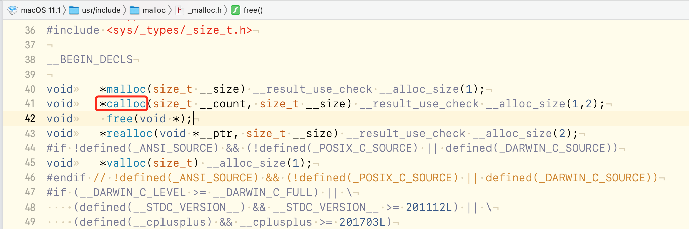
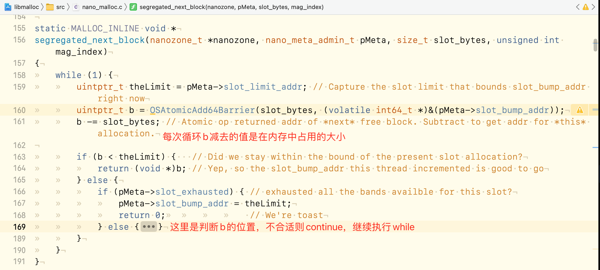
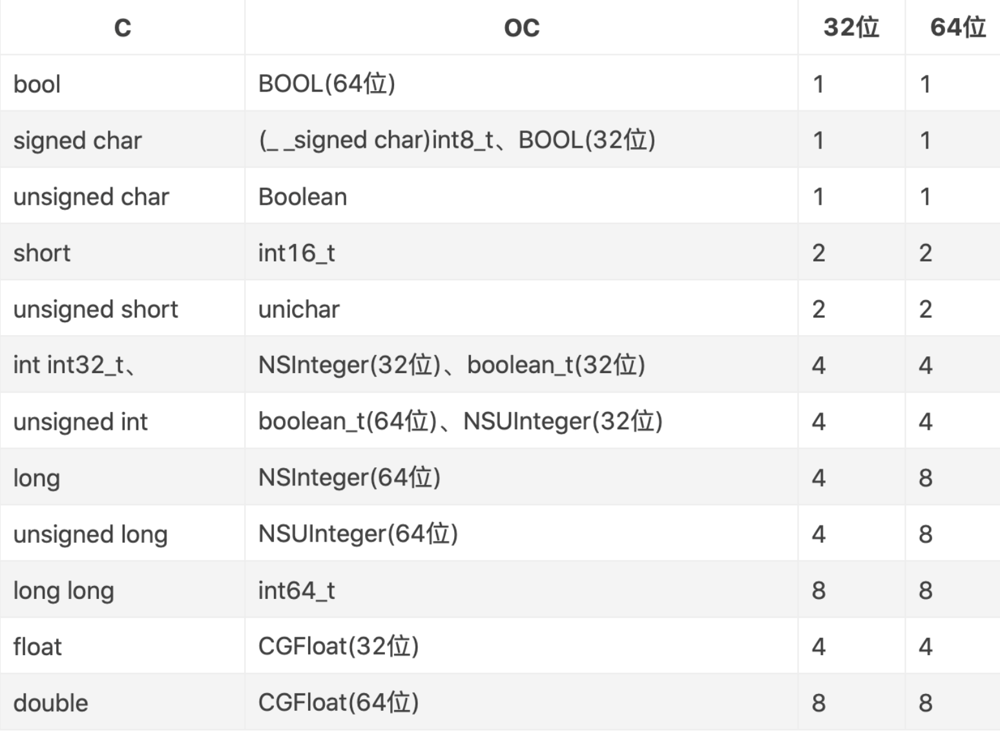

calloc 在上一节中，我们知道开辟空间会用到calloc这个函数，那我们就追一下这个函数的内部逻辑。
但是发现calloc这个方法没有办法继续下一步追踪了，如图：

我们发现calloc定义在malloc/_malloc.h文件下，我们也找到了对应的源码 。我这里用的是一份可运行的源码。
接下来，直接上代码，在main函数中：
1 2 3 // 开辟40个字节的空间 void *p = calloc(1, 40); NSLog(@"%lu",malloc_size(p));
直接运行，查看malloc.c -> calloc的内部实现。
1 2 3 4 5 void * calloc(size_t num_items, size_t size) { return _malloc_zone_calloc(default_zone, num_items, size, MZ_POSIX); }
可以看到calloc只是调用了_malloc_zone_calloc方法，其它啥也没做，这里需要注意的是，default_zone参数，它是一个虚拟的默认zone，通过它可以做一些事情，如下：
_malloc_zone_calloc 1 2 3 4 5 6 7 8 9 10 11 12 13 14 15 16 17 18 19 20 21 22 23 static void * _malloc_zone_calloc(malloc_zone_t *zone, size_t num_items, size_t size, malloc_zone_options_t mzo) { MALLOC_TRACE(TRACE_calloc | DBG_FUNC_START, (uintptr_t)zone, num_items, size, 0); void *ptr; if (malloc_check_start) { internal_check(); } ptr = zone->calloc(zone, num_items, size); if (os_unlikely(malloc_logger)) { malloc_logger(MALLOC_LOG_TYPE_ALLOCATE | MALLOC_LOG_TYPE_HAS_ZONE | MALLOC_LOG_TYPE_CLEARED, (uintptr_t)zone, (uintptr_t)(num_items * size), 0, (uintptr_t)ptr, 0); } MALLOC_TRACE(TRACE_calloc | DBG_FUNC_END, (uintptr_t)zone, num_items, size, (uintptr_t)ptr); if (os_unlikely(ptr == NULL)) { malloc_set_errno_fast(mzo, ENOMEM); } return ptr; }
calloc直接调用的是_malloc_zone_calloc。我们看一下这个函数的实现。通过返回值，我们确定重点代码应该与ptr有关。所以_malloc_zone_calloc精简如下：
1 2 3 4 5 6 7 8 9 10 11 12 static void * _malloc_zone_calloc(malloc_zone_t *zone, size_t num_items, size_t size, malloc_zone_options_t mzo) { MALLOC_TRACE(TRACE_calloc | DBG_FUNC_START, (uintptr_t)zone, num_items, size, 0); void *ptr; // ptr初始化，这里打一个断点 ptr = zone->calloc(zone, num_items, size); return ptr; }
运行到这里，发现zone->calloc进去是一个函数的声明，有没有下文了。这是，我们用lldb调试，打印一下数据：
1 2 (lldb) p zone->calloc (void *(*)(_malloc_zone_t *, size_t, size_t)) $0 = 0x00000001002f4b93 (.dylib`default_zone_calloc at malloc.c:385)
感觉发现了新大陆：default_zone_calloc在malloc.c文件的第385行。
1 2 3 4 5 6 7 static void * default_zone_calloc(malloc_zone_t *zone, size_t num_items, size_t size) { zone = runtime_default_zone(); return zone->calloc(zone, num_items, size); }
到这里，又有一个zone。这个才是创建的runtime时的default zone。
1 2 3 4 5 6 7 8 9 10 11 12 13 14 15 16 17 18 19 20 21 MALLOC_NOEXPORT malloc_zone_t* lite_zone = NULL; MALLOC_ALWAYS_INLINE static inline malloc_zone_t * runtime_default_zone() { // lite_zone = null，所以会执行创建 return (lite_zone) ? lite_zone : inline_malloc_default_zone(); } ⬇️ static inline malloc_zone_t * inline_malloc_default_zone(void) { // 只创建一次，内部是一个os_once _malloc_initialize_once(); // malloc_report(ASL_LEVEL_INFO, "In inline_malloc_default_zone with %d %d\n", malloc_num_zones, malloc_has_debug_zone); // 可以看到malloc_zones是一个(malloc_zone_t **)类型的数据 // malloc_zone_t **malloc_zones = (malloc_zone_t **)0xdeaddeaddeaddead; return malloc_zones[0]; }
这里看一下malloc_zones的内容：
_malloc_zone_t 上面的大部分内容都是围绕着_malloc_zone_t展开的。
这里可以看到malloc_zones[0]的元素就是一个malloc_zone_t *类型的数据，根据lldb打印出来的数据和查看到的内容可以看到malloc_zone_t中存放的就是一些我们在开辟空间时需要调用的方法。
看一下_malloc_zone_t结构体
1 2 3 4 5 6 7 8 9 10 11 12 13 14 15 16 17 18 19 20 #define MALLOC_ZONE_FN_PTR(fn) fn typedef struct _malloc_zone_t { /* Only zone implementors should depend on the layout of this structure; Regular callers should use the access functions below */ void *reserved1; /* RESERVED FOR CFAllocator DO NOT USE */ void *reserved2; /* RESERVED FOR CFAllocator DO NOT USE */ size_t (* MALLOC_ZONE_FN_PTR(size))(struct _malloc_zone_t *zone, const void *ptr); void *(* MALLOC_ZONE_FN_PTR(malloc))(struct _malloc_zone_t *zone, size_t size); void *(* MALLOC_ZONE_FN_PTR(calloc))(struct _malloc_zone_t *zone, size_t num_items, size_t size); void *(* MALLOC_ZONE_FN_PTR(valloc))(struct _malloc_zone_t *zone, size_t size); /* same as malloc, but block returned is set to zero and is guaranteed to be page aligned */ void (* MALLOC_ZONE_FN_PTR(free))(struct _malloc_zone_t *zone, void *ptr); void *(* MALLOC_ZONE_FN_PTR(realloc))(struct _malloc_zone_t *zone, void *ptr, size_t size); void (* MALLOC_ZONE_FN_PTR(destroy))(struct _malloc_zone_t *zone); const char *zone_name; ... boolean_t (* MALLOC_ZONE_FN_PTR(claimed_address))(struct _malloc_zone_t *zone, void *ptr); } malloc_zone_t;
结构体中的数据与我们图片上的内容是一样的，定义了很多的方法。以calloc为例。
1 2 3 4 5 6 7 8 void *(* MALLOC_ZONE_FN_PTR(calloc))(struct _malloc_zone_t *zone, size_t num_items, size_t size); 转换之后的方法为： calloc(_malloc_zone_t *zone, size_tnum_items, size_t size) { // 调用.dylib中的方法，nano_malloc.c : 878 nano_calloc(zone, num_items, size); }
我们也可以用同样的方式打印一下看看：
1 2 (lldb) po zone->calloc (.dylib`nano_calloc at nano_malloc.c:878)
打印出来的信息已经很全面了，同样告诉我们了nano_calloc方法在nano_malloc.c文件中。
nano_calloc 1 2 3 4 5 6 7 8 9 10 11 12 13 14 15 16 17 18 19 20 21 22 23 static void * nano_calloc(nanozone_t *nanozone, size_t num_items, size_t size) { size_t total_bytes; // alloc之前需要先判断申请的空间大小是否合理 if (calloc_get_size(num_items, size, 0, &total_bytes)) { return NULL; } // 如果获取到的大小在系统约定的最大值范围内则，直接进行malloc。 if (total_bytes <= NANO_MAX_SIZE) { // 所以一定会走这里 void *p = _nano_malloc_check_clear(nanozone, total_bytes, 1); if (p) { return p; } else { /* FALLTHROUGH to helper zone */ } } malloc_zone_t *zone = (malloc_zone_t *)(nanozone->helper_zone); // 如果初始化失败，则继续执行。 return zone->calloc(zone, 1, total_bytes); }
在nano_calloc中，我们同样的先看返回值，最底部的是又继续调用了zone->calloc，感觉不太对，上面就找到了还有一个返回p的位置。运行也确实会走到这里。
接下来就是重点了哈~
1 2 3 4 5 6 7 8 9 10 11 12 13 14 15 16 17 18 19 20 21 22 23 24 25 26 27 static void * _nano_malloc_check_clear(nanozone_t *nanozone, size_t size, boolean_t cleared_requested) { MALLOC_TRACE(TRACE_nano_malloc, (uintptr_t)nanozone, size, cleared_requested, 0); void *ptr; size_t slot_key; // 插槽的key // 获取真正的内存大小，以及slot_key size_t slot_bytes = segregated_size_to_fit(nanozone, size, &slot_key); // Note slot_key is set here // 拿到插槽的index mag_index_t mag_index = nano_mag_index(nanozone); // nano_meta_admin_t pMeta = &(nanozone->meta_data[mag_index][slot_key]); ptr = OSAtomicDequeue(&(pMeta->slot_LIFO), offsetof(struct chained_block_s, next)); if (ptr) { // 这里都是error的判断 } else { // 死循环获取内存指针，拿到返回 ptr = segregated_next_block(nanozone, pMeta, slot_bytes, mag_index); } if (cleared_requested && ptr) { memset(ptr, 0, slot_bytes); // TODO: Needs a memory barrier after memset to ensure zeroes land first? } return ptr; }
接下来看一下开辟空间的算法：segregated_size_to_fit
segregated_size_to_fit 1 2 3 4 5 6 7 8 9 10 11 12 13 14 static MALLOC_INLINE size_t segregated_size_to_fit(nanozone_t *nanozone, size_t size, size_t *pKey) { size_t k, slot_bytes; if (0 == size) { size = NANO_REGIME_QUANTA_SIZE; // Historical behavior } k = (size + NANO_REGIME_QUANTA_SIZE - 1) >> SHIFT_NANO_QUANTUM; // round up and shift for number of quanta slot_bytes = k << SHIFT_NANO_QUANTUM; // multiply by power of two quanta size *pKey = k - 1; // Zero-based! return slot_bytes; }
这个算法在上一节中计算alignedInstanceSize类似。这里的主要逻辑是先右移4位，再左移4位。相当于把后4位抹零。拿我们开辟空间传进来的40为例计算一下：
1 2 3 4 (size + NANO_REGIME_QUANTA_SIZE - 1) = 40 + 15 -1 54 -> 0011 0110 >> 4 0000 0011 // 右移4位 << 4 0011 0000 = 48 // 左移4位
这里计算出来的大小就是48。而slot_key=47。之后就是获取内存指针。

这就是calloc的流程，同时，再一次验证了，iOS在内存中是16字节对齐。
结构体的内存对齐 结构体内存对齐3打原则：
数据成员对⻬规则：结构体(struct)的数据成员，第一个数据成员放在offset为0的地方，以后每个数据成员存储的起始位置要从该成员大小或者成员的子成员大小(只要该成员有子成员，比如说是数组，结构体等)的整数倍开始(比如int为4字节,则要从4的整数倍地址开始存储。
结构体作为成员：如果一个结构里有某些结构体成员，则结构体成员要从其内部最大元素大小的整数倍地址开始存储。(struct a里存有struct b，b里有char，int, double等元素，那b应该从8的整数倍开始存储)
收尾工作：结构体的总大小，也就是sizeof的结果，必须是其内部最大成员的整数倍。不足的要补⻬。
开始代码之前，先了解一下各种数据类型所占的内存大小：

接下来上代码，看看结构体的内存：
1 2 3 4 5 6 7 8 9 10 11 12 13 14 15 struct Struct1 { double a; char b; int c; short d; }str1; struct Struct2 { double a; int b; char c; short d; }str2; NSLog(@"str1 = %lu, str2-%lu",sizeof(str1),sizeof(str2));
输出的结果很明白的哈。 str1 = 24, str2-16
我们分析一下：
1 2 3 4 5 6 7 8 9 10 11 12 13 14 15 16 17 18 19 20 21 22 struct Struct1 { double a; // 8 (0-7) char b; // 1 [8 1] (8) int c; // 4 [9 10 11 12] 9不是4的整数倍(12 13 14 15) short d; // 2 [16 17] }str1; // 内部需要的大小为: 17 // 最大属性 : 8 // 结构体整数倍: 24 struct Struct2 { double a; //8 (0-7) int b; //4 (8 9 10 11) char c; //1 (12) short d; //2 (13 14) 13不是2的整数倍，从14开始(14 15) }str2; // 内部需要的大小为: 15 // 最大属性 : 8 // 结构体整数倍: 16 NSLog(@"str1 = %lu, str2-%lu",sizeof(str1),sizeof(str2));
如果结构体内部套用结构体呢？
1 2 3 4 5 6 7 8 struct Struct3 { double a; //8 (0-7) int b; //4 (8 9 10 11) char c; //1 (12) struct Struct2 str_2; // 13 14 15 (16 - 31) }str3; NSLog(@"str3 = %lu", sizeof(str3));
按照内存对齐第二条原则，结构体成员从其内部最大成员的size的整数倍开始。c的位置是12，接下来的位置是13，不满足8的整数倍。所以按照原则，前面补齐，从16位开始。所以str3结构体的大小为32。
对象的内存对齐 老样子，先看代码哈：
1 2 3 4 5 6 7 8 9 10 11 12 13 14 15 16 17 18 19 20 21 22 23 24 @interface Person : NSObject @property (nonatomic, copy) NSString *name; @property (nonatomic, assign) int age; @property (nonatomic, assign) int score; @property (nonatomic, assign) long height; @property (nonatomic) char c1; @property (nonatomic) char c2; @end main() { Person *person = [Person alloc]; person.name = @"name"; person.age = 18; person.score = 20; person.height = 180; person.c1 = 'a'; person.c2 = 'b'; NSLog(@"%@ - %lu - %lu - %lu",person,sizeof(person),class_getInstanceSize([Person class]),malloc_size((__bridge const void *)(person))); }
我们在NSLog上打个断点。有时间的话，可以把属性先注释掉，从0开始，一个属性一个属性的加起来看输出的是什么结果。
po 这里直接输出person指向的对象的内存地址。
1 2 (lldb) po person <Person: 0x600002adbcf0>
这里有一个需要介绍的点，上一章中有用到x person命令，输出的内容与View Memory中显示的是一致的。而x/8gx就是进行排序。8代表的是输出8组内存。如果是4那就是输出4组内容。每一块都是8个字节。
1 2 3 4 5 (lldb) x/8gx person 0x600002adbcf0: 0x0000000103930808 0x0000001200006261 0x600002adbd00: 0x0000000000000014 0x000000010392b038 0x600002adbd10: 0x00000000000000b4 0x0000000000000000 0x600002adbd20: 0x0000c1c5c19bbd20 0x00000000000007fb
0x600002adbcf0：是person指向的首地址。后面存放的都是属性的值。内存都是连续的。
我们分别输出内存里的内容。
1 2 3 4 5 6 7 8 9 10 11 12 13 14 15 16 (lldb) po 0x0000000103930808 Person // isa指针 (lldb) po 0x00000012 18 (lldb) 0x61是十进制的97 -> a (lldb) po 0x0000000000000014 20 (lldb) po 0x000000010392b038 name (lldb) po 0x00000000000000b4 180
0x0000001200006261：这一块地址上内容是被拆开的。我们知道int是4个字节，char是1个字节，所以前面的几位是int的值，后面的再进行拆分，分别是两个char类型的数据。
苹果在内存上也是做了足够多的优化，虽然在内存上是16个字节对齐的，以空间换时间，提高读取效率，但是在内部实现上，还是进行了大量的优化，这样做的目的是最大限度的节约内存同时保证数据的安全性，但是一定要注意的是，属性是按8个字节对齐的。
但是为啥两个int类型的数据没有放在一起呢？可能是系统内部做的优化，可以试一下，把所有的char类型注释掉，两个int类型的数据就会存放在一起。可能是会将char类型的数据优先进行填充吧。另外可以多试一下，3个char类型的会怎么样，等等…
最后输出的结果是
1 <Person: 0x600002adbcf0> - 8 - 40 - 48
我们分析一下输出的内容：
person：当前的类对象，存放的指针，指向的内存地址。
sizeof(person)：person存放的就是一个指针，8个字节。
class_getInstanceSize([Person class])：这个类真正需要的空间。属性是8个字节对齐的。
malloc_size((__bridge const void *)(person))：内存中需要开辟的空间。内存空间是16个字节对齐的。
float、double 加如改变其中的一个属性位double类型的，又会是什么情况呢？我这里把上面的height改为了double类型。看一下输出结果
1 2 3 4 5 6 7 (lldb) x/8gx person 0x600000045530: 0x000000010626d808 0x0000001200006261 0x600000045540: 0x0000000000000014 0x0000000106268038 0x600000045550: 0x4066800000000000 0x0000000000000000 0x600000045560: 0x0000000000000000 0x0000000000000000 (lldb) po 0x4066800000000000 4640537203540230144
诶~~~ 怎么没有输出180呢？是因为对于float、double类型的数据，系统会做一次特殊的转换处理。我们没有办法直接从内存中读出double类型的值。
但是我们可以通过转化double类型的数据来看是否位上面对应的值。
1 2 (lldb) p/x (double)180.0 (double) $4 = 0x4066800000000000
转换后，发现正好是对应的数据。
这里当然有读取浮点数的方法p/f [0x000000123]
1 2 (lldb) p/f 0x4066800000000000 (long) $5 = 180
这就是内存补齐的内容
总结：
calloc的流程。
结构体的对齐规则。
类对象的属性是8个字节对齐的，但是在内存空间是16个字节对齐。
x/4gx的使用
引用 libmalloc源码 苹果更多源码